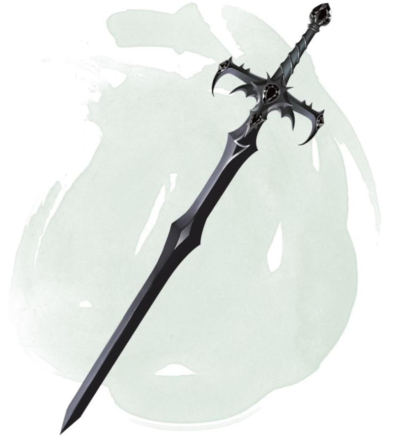

Épée de Kas
[ Sword of Kas ]
Objet merveilleux, artéfact (nécessite un lien)
Lorsque Vecna gagna en puissance, il nomma un maléfique et impitoyable lieutenant, Kas à la Main Ensanglantée, en tant que garde du corps et bras droit. Cet abject scélérat lui servit de conseiller, de chef de guerre et d'assassin. Ses succès lui offrirent l'admiration de Vecna ainsi qu'une récompense : une épée intrinsèquement mauvaise, comme l'homme qui devait la manier.
Pendant une longue période il servit avec loyauté la liche, mais à mesure que l'orgueil de Kas grandissait son orgueil faisait de même. Son épée le pressait de détrôner Vecna, ainsi ils pourraient régner sur l'empire de la liche à sa place. La légende raconte que la chute de Vecna est survenue de la main de Kas, mais Vecna mit également fin à la rébellion de son lieutenant, ne laissant de Kas que son épée. Ainsi le monde devint moins sombre.
L'Épée de Kas est une épée longue magique et intelligente qui confère un bonus de +3 aux jets d'attaque et de dégâts effectués avec elle. Elle effectue un coup critique sur un 19 ou un 20 naturel, et inflige 2d10 dégâts tranchants supplémentaires aux morts-vivants.
Si l'épée n'est pas plongée dans le sang dans la minute qui suit sa sortie de fourreau, son porteur doit effectuer un jet de sauvegarde de Charisme DD 15. En cas d'échec au jet, le porteur est dominé par l'épée, comme s'il était sujet au sort domination de monstre, et l'épée lui ordonne de lui faire prendre un bain de sang. L'effet du sort prend fin lorsque la requête de l'épée est satisfaite.
Propriétés aléatoires. L'épée possède un certain nombre de propriétés déterminées aléatoirement:
• 1 propriété bénéfique mineure
• 1 propriété bénéfique majeure
• 1 propriété néfaste mineure
• 1 propriété néfaste majeure
Esprit de Kas. Tant que l'épée est sur votre personne, vous ajoutez 1d10 à votre initiative au début de chaque combat. De plus, lorsque vous utilisez une action pour attaquer avec l'épée, vous pouvez transférer une partie, ou la totalité, de son bonus d'altération à l'attaque vers votre Classe d'Armure. Les ajustements de bonus restent effectifs jusqu'au début de votre tour suivant.
Sorts. Tant que l'épée est sur votre personne, vous pouvez utiliser une action pour lancer l'un des sorts suivants (sauvegarde DD 18) : appel de la foudre, parole divine ou doigt de mort. Une fois que vous avez utilisé l'épée pour lancer un sort, vous ne pouvez pas lancer le même sort avant le prochain lever de soleil.
Conscience. L'Épée de Kas est une arme intelligente chaotique mauvaise qui possède une Intelligence de 15, une Sagesse de 13, et un Charisme de 16. Elle peut entendre et possède la vision dans le noir à 36 mètres. L'arme communique par télépathie avec son porteur et peut parler, lire, et comprendre le commun.
Personnalité. L'objectif de l'épée est d'apporter la ruine à Vecna. Tuer les serviteurs de Vecna, détruire l'ouvrage de la liche, et déjouer ses machinations sont autant de moyens d'atteindre ce but.
L'Épée de Kas cherche également à détruire quiconque a été corrompu par l'Œil et la Main de Vecna. L'obsession de l'épée pour ces artéfact peut éventuellement contaminer son porteur.
Détruire l'épée. Une créature liée à la fois à l'Œil de Vecna et à la Main de Vecna peut utiliser la propriété Souhait de ces artéfacts combinés pour déconstruire l'Épée de Kas. La créature doit lancer le sort souhait et effectuer un jet de Charisme contre un jet de Charisme de l'épée. L'épée doit se trouver dans un rayon de 9 mètres de la créature, sans quoi le sort échoue. Si l'épée remporte l'opposition, rien ne se passe, et le sort souhait est dépensé pour rien. Si l'épée perd l'opposition, elle est détruite.
Pendant une longue période il servit avec loyauté la liche, mais à mesure que l'orgueil de Kas grandissait son orgueil faisait de même. Son épée le pressait de détrôner Vecna, ainsi ils pourraient régner sur l'empire de la liche à sa place. La légende raconte que la chute de Vecna est survenue de la main de Kas, mais Vecna mit également fin à la rébellion de son lieutenant, ne laissant de Kas que son épée. Ainsi le monde devint moins sombre.
L'Épée de Kas est une épée longue magique et intelligente qui confère un bonus de +3 aux jets d'attaque et de dégâts effectués avec elle. Elle effectue un coup critique sur un 19 ou un 20 naturel, et inflige 2d10 dégâts tranchants supplémentaires aux morts-vivants.
Si l'épée n'est pas plongée dans le sang dans la minute qui suit sa sortie de fourreau, son porteur doit effectuer un jet de sauvegarde de Charisme DD 15. En cas d'échec au jet, le porteur est dominé par l'épée, comme s'il était sujet au sort domination de monstre, et l'épée lui ordonne de lui faire prendre un bain de sang. L'effet du sort prend fin lorsque la requête de l'épée est satisfaite.
Propriétés aléatoires. L'épée possède un certain nombre de propriétés déterminées aléatoirement:
• 1 propriété bénéfique mineure
• 1 propriété bénéfique majeure
• 1 propriété néfaste mineure
• 1 propriété néfaste majeure
Esprit de Kas. Tant que l'épée est sur votre personne, vous ajoutez 1d10 à votre initiative au début de chaque combat. De plus, lorsque vous utilisez une action pour attaquer avec l'épée, vous pouvez transférer une partie, ou la totalité, de son bonus d'altération à l'attaque vers votre Classe d'Armure. Les ajustements de bonus restent effectifs jusqu'au début de votre tour suivant.
Sorts. Tant que l'épée est sur votre personne, vous pouvez utiliser une action pour lancer l'un des sorts suivants (sauvegarde DD 18) : appel de la foudre, parole divine ou doigt de mort. Une fois que vous avez utilisé l'épée pour lancer un sort, vous ne pouvez pas lancer le même sort avant le prochain lever de soleil.
Conscience. L'Épée de Kas est une arme intelligente chaotique mauvaise qui possède une Intelligence de 15, une Sagesse de 13, et un Charisme de 16. Elle peut entendre et possède la vision dans le noir à 36 mètres. L'arme communique par télépathie avec son porteur et peut parler, lire, et comprendre le commun.
Personnalité. L'objectif de l'épée est d'apporter la ruine à Vecna. Tuer les serviteurs de Vecna, détruire l'ouvrage de la liche, et déjouer ses machinations sont autant de moyens d'atteindre ce but.
L'Épée de Kas cherche également à détruire quiconque a été corrompu par l'Œil et la Main de Vecna. L'obsession de l'épée pour ces artéfact peut éventuellement contaminer son porteur.
Détruire l'épée. Une créature liée à la fois à l'Œil de Vecna et à la Main de Vecna peut utiliser la propriété Souhait de ces artéfacts combinés pour déconstruire l'Épée de Kas. La créature doit lancer le sort souhait et effectuer un jet de Charisme contre un jet de Charisme de l'épée. L'épée doit se trouver dans un rayon de 9 mètres de la créature, sans quoi le sort échoue. Si l'épée remporte l'opposition, rien ne se passe, et le sort souhait est dépensé pour rien. Si l'épée perd l'opposition, elle est détruite.
Dungeon Master´s Guide
